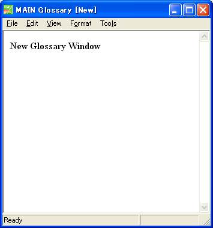

4.3.1. Controlling the Glossary Windows¶
Most of the commands for the Glossary windows are the same as for the Memory window. Additionally, memories and glossaries are stored in the same format – the only real difference between them is conceptual. This means that you can use glossary files as memories, and vice versa.
The chief way that Glossary windows behave differently than the Memory window is that you can have more than one Glossary window. The first glossary window created is the Main Glossary window, which has some functionality lacking in the other glossaries.
The Main Glossary window is identified by the word “MAIN” in the title bar:

A summary of the functionality of the main and other Glossary windows is shown below:
| Feature | Main Glossary Window | Other Glossary Windows |
|---|---|---|
| Automatic glossary lookup | ||
| Automatic glossary registration |  |
|
| Add glossary entries from Memory window | |
|
| Add entries to memory from Glossary window | ||
| Retrieve entries from the MS Office interfaces and Tag Assist | |
If you close the Main Glossary window, the next Glossary window to have been created becomes the Main window.
Other minor differences between the Glossary windows and the Memory window are described in the following sections.